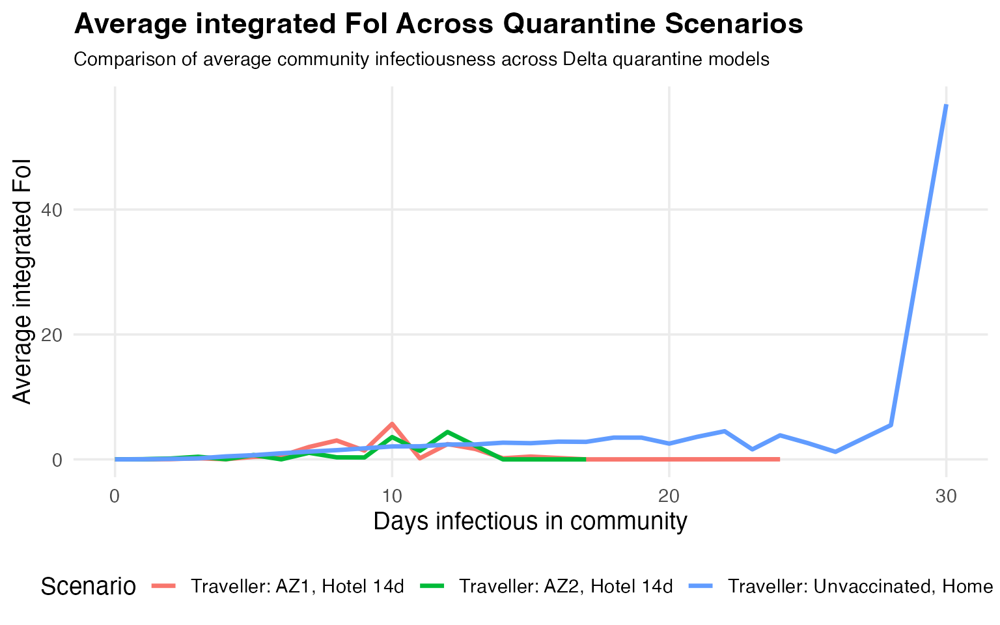

quarrisk: Quarantine risk explorer (Delta)
quarrisk-overview.RmdIntroduction
During the COVID-19 pandemic, governments around the world relied on border quarantine systems to prevent imported infections from seeding community outbreaks. However, as new variants like Delta emerged, understanding how often these systems “leak” became critical. Even small probabilities of a breach could trigger large community transmission.
The quarrisk package was developed to make this risk easier to explore and communicate. It transforms a complex epidemiological simulation into an accessible tool where users can:
View the simulated data behind quarantine breach events.
Compare key infection-risk measures across scenarios.
Interact with an intuitive dashboard built using Shiny.
This vignette introduces the package step-by-step beginning with the background data, exploring simple summaries and ending with an interactive dashboard that brings the results to life.
Understanding the data
The data included in quarrisk come from stochastic simulations of infected travellers and quarantine workers. Each observation represents one simulated individual with timing information (when they were infectious, detected, isolated, etc.).
Load the dataset packaged with the library:
library(quarrisk)
data(breach_data, package = "quarrisk")
utils::head(breach_data[, c("days_infectious_community","FoI_max","integrated_FoI","scenario")])
#> days_infectious_community FoI_max integrated_FoI
#> 1 8.143508 0.145699666 0.54867389
#> 2 12.365827 0.300247326 1.50842976
#> 3 20.994417 0.087240686 0.71328332
#> 4 10.070068 0.006514228 0.02681432
#> 5 12.545853 0.116555915 0.59551965
#> 6 13.181670 0.051949719 0.29837885
#> scenario
#> 1 Traveller: Unvaccinated, Home 7d
#> 2 Traveller: Unvaccinated, Home 7d
#> 3 Traveller: Unvaccinated, Home 7d
#> 4 Traveller: Unvaccinated, Home 7d
#> 5 Traveller: Unvaccinated, Home 7d
#> 6 Traveller: Unvaccinated, Home 7dKey variables:
days_infectious_community – number of days an individual was infectious in the community
integrated_FoI – total or “integrated” infectiousness over that period
FoI_max – the highest instantaneous infectiousness value
scenario – which quarantine setting was simulated (traveller vs. worker, vaccinated vs. unvaccinated, home vs. hotel)
Together, these variables capture how much potential exposure each case contributed to the community..
Summarising the patterns
To see how risk evolves over time, we can average the force-of-infection (FoI) measures by day for each scenario.
daily_summary <- breach_data |>
dplyr::filter(!is.na(.data$integrated_FoI)) |>
dplyr::mutate(day = floor(.data$days_infectious_community)) |>
dplyr::group_by(.data$scenario, .data$day) |>
dplyr::summarise(
mean_integrated_FoI = mean(.data$integrated_FoI, na.rm = TRUE),
mean_FoI_max = mean(.data$FoI_max, na.rm = TRUE),
.groups = "drop"
)
utils::head(daily_summary)
#> # A tibble: 6 × 4
#> scenario day mean_integrated_FoI mean_FoI_max
#> <chr> <dbl> <dbl> <dbl>
#> 1 Traveller: AZ1, Hotel 14d 0 0.00216 0.411
#> 2 Traveller: AZ1, Hotel 14d 1 0.0107 0.239
#> 3 Traveller: AZ1, Hotel 14d 2 0.0415 0.382
#> 4 Traveller: AZ1, Hotel 14d 3 0.173 0.492
#> 5 Traveller: AZ1, Hotel 14d 4 0.0293 0.0717
#> 6 Traveller: AZ1, Hotel 14d 5 0.404 0.404This summarisation condenses thousands of simulated individuals into a simple daily trend that can be compared across quarantine types.
Visualising breach risk
The plot below shows how average infectiousness in the community changes over time for each scenario. Higher lines indicate scenarios where, on average, individuals were infectious for longer or at higher intensity implying greater potential for a community outbreak.
ggplot2::ggplot(
daily_summary,
ggplot2::aes(
x = .data$day,
y = .data$mean_integrated_FoI,
colour = .data$scenario
)
) +
ggplot2::geom_line(linewidth = 1.2) +
ggplot2::labs(
title = "Average integrated FoI Across Quarantine Scenarios",
subtitle = "Comparison of average community infectiousness across Delta quarantine models",
x = "Days infectious in community",
y = "Average integrated FoI",
colour = "Scenario"
) +
ggplot2::theme_minimal(base_size = 14) +
ggplot2::theme(
plot.title = ggplot2::element_text(face = "bold"),
plot.subtitle = ggplot2::element_text(size = 11, margin = ggplot2::margin(b = 10)),
legend.position = "bottom",
panel.grid.minor = ggplot2::element_blank()
)
Interpreting the figure:
Scenarios with longer or higher curves show a higher likelihood that infectious people were active in the community.
Home quarantine for unvaccinated travellers tends to show the largest average FoI meaning this scenario carries the highest breach risk.
Fully vaccinated travellers or hotel quarantine settings generally result in shorter, lower curves, reflecting reduced exposure risk.
These comparisons demonstrate how quarantine design and vaccination coverage jointly shape the probability of a breach.
Going beyond static plots
While static plots give a quick overview, policymakers often want to interact with the data toggle between measures, focus on one scenario, or view all at once. The quarrisk package provides an embedded Shiny app for this purpose.
# Launch the interactive dashboard
quarrisk::run_quarrisk()The app opens in your browser and allows you to:
Switch between Integrated and Maximum FoI,
Choose individual or multiple scenarios
View daily trends side-by-side in a clean, colour-coded interface.
Through this, users can quickly identify the quarantine designs that produce the safest outcomes.
Conclusion
The quarrisk package turns complex outbreak simulations into clear, interactive visual stories. By blending pre-cleaned data, reproducible R code, and a simple Shiny interface, it enables both technical and non-technical audiences to understand:
How quarantine breach risk arises,
Why some scenarios are safer than others, and
Which policies most effectively reduce transmission.
In short, quarrisk bridges data analysis and real-world decision-making showing how modelling can directly inform public-health planning.